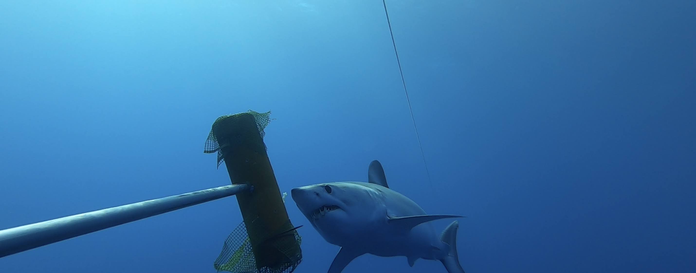

Talks, interviews & press
Research communicated beyond the journal page.
Featured
Beneath the Waves Paper Chats: Jamie Fitzgerald and I discuss findings from my 2022 paper on blue shark stress response to capture.
Virtual presentation at the 2020 Bahamas Natural History Conference. My presentation starts at approximately 57:00.
Webinar for Beneath the Waves' Shark Talks on the risk effects of large sharks in Cape Cod, presented live during the COVID-19 pandemic.
In the press